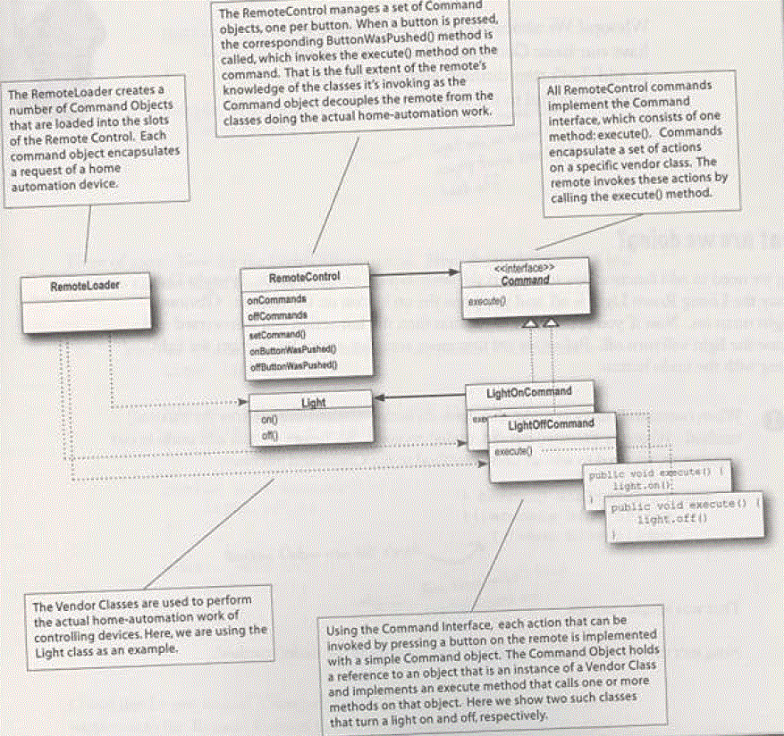
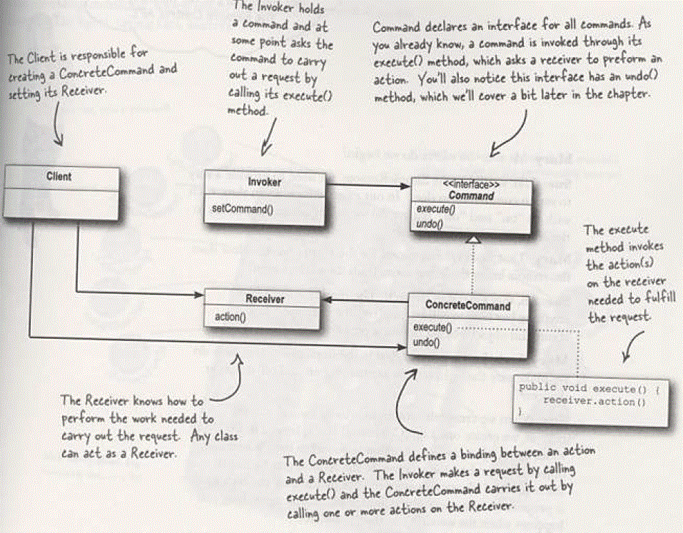

Command Pattern
Question
- 解耦请求者和接受者之间的紧关联关系
- 在接受者和请求者之间增加了一层，命令层，使得请求者和命令层通信。降低接受者的复杂性和变化性。
- 这个pattern有些和Observer的结构类似，但是是目的的不同。
- 书中给的列子是通过remote controller来控制家电。remote controller上针对每个家电都有两个按钮：on 和 off。
但是厂商提供的开和关并不一定适合controller的命令，这个适合，就要进行转换，一种直接在receiver的code中
来实现，但是呢，这种情况下，当添加一个家电，或者替换不同品牌的家电的适合，就要不断的调整code，带来很多的不确定性。
Implement
The Command Pattern encapsulates a request as an object, thereby letting you
parameterize other objects with different requests, queue or log requests,
and support undoable oprations.
- 那实现就是receiver统一我能够执行的动作为命令对象，这个命令对象之一一个方法execute。这样我就把厂商的on操作和
off操作来实现其command接口的实现。同时用这个具体的command的对象封装了厂商的操作。这样就把receiver奋力出来。
- command的模式用处还是比较多的：
- 设置线程池，线程队列，继承统一接口的线程执行方法，主线程从线程队列中取一个对象，启动一个子线程去执行统一接口不同实现的操作。
- 事务的实现，将每一步操作封装成command对象，然后持久化放在disk上，当system crash的时候，能够从disk中读出command的对象
来实现recovert。
- 此外还可以实现集合操作，就是将多个command操作同时执行
- 此外可以从该pattern种看到，将关系或者对象封装成command的操作了，这样中间的相互对象的create的操作不相关，
这部分实现就放在request端了， 这就简化了其他的部分。
- request端提出请求，controller只管执行命令，而vendor只管提供命令，中间的匹配关系由command来关联起来。
- 此外进一步的强调了参数是复杂对象的复合关系。
UML
针对书中的例子给出的UML

Code
todo
UP
{kind=link}
{kind=link}